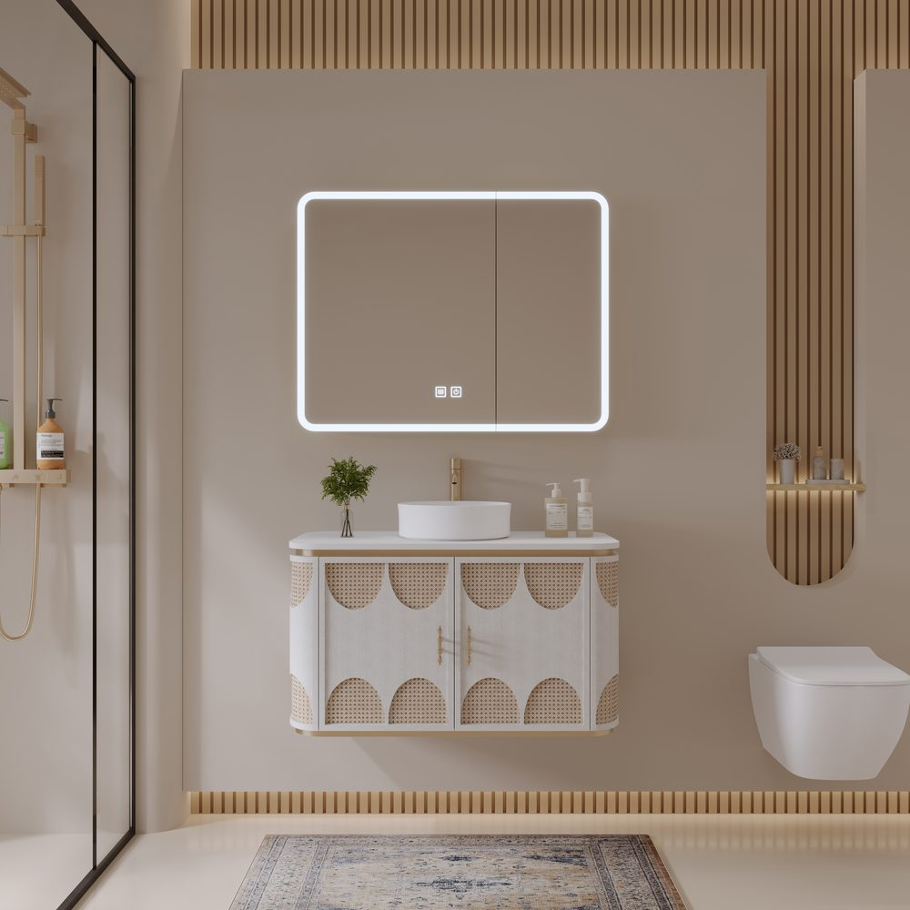

Oak · Wall-mounted
Wave Rattan Vanity
From $1899 USD
MOQ: 20 units
A wall-mounted vanity combining natural rattan door fronts with a solid oak frame. Round ceramic basin, LED mirror cabinet sold separately.
Size36" / 90 cm
Color / MaterialOak / Solid Oak + Rattan
InstallationWall-mounted
BasinRound ceramic
MOQ20 units
Wholesale priceFrom $1899 USD
Project specification: 36" / 90 cm Oak / Solid Oak + Rattan wall-mounted bathroom vanity with round ceramic. Designed for residential, retail, wholesale and project supply.